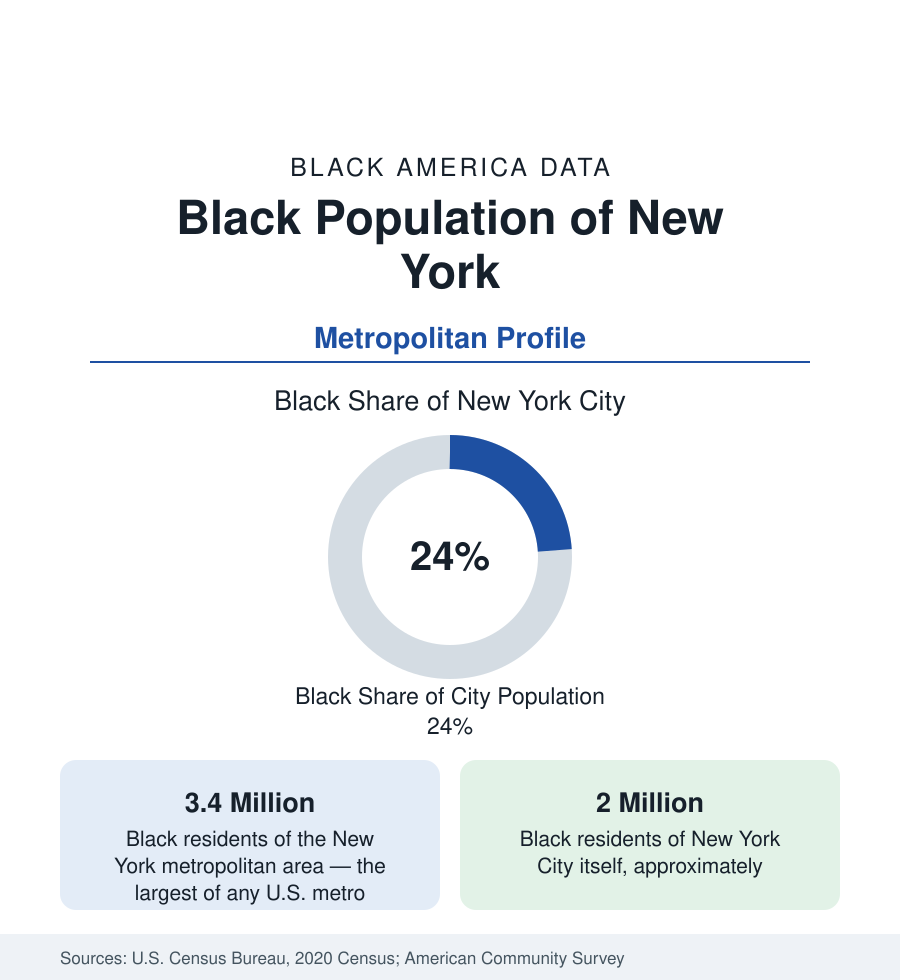

Black Cities
Black New York: The Largest Black Population in America
The New York metropolitan area holds about 3.4 million Black residents — more than any metro in the nation — and the city itself about two million. The census profile.

New York is the capital of Black population in the United States by scale. The metropolitan area holds about 3.4 million Black residents — Black alone or in combination — more than any other metropolitan area in the country, and the five boroughs of New York City themselves hold about two million, roughly one in four city residents. No other place in this reference combines so many distinct Black populations in one geography: descendants of the Great Migration from the South, the nation's largest Caribbean immigrant communities, and one of its largest African immigrant populations. This article profiles Black New York in the census data.
Distribution Across the Boroughs and the Region
Brooklyn holds the largest Black population of the boroughs — approaching one million Black residents — concentrated in its central and eastern neighborhoods, from Bedford-Stuyvesant and Crown Heights through Flatbush and East New York, neighborhoods that also form the center of Caribbean New York. Harlem in upper Manhattan remains the historic capital of Black America, its Black population now sharing the neighborhood with substantial new arrivals of other backgrounds. The Bronx holds the city's second great concentration, Queens the most diverse — including the large, heavily homeowner Black communities of southeast Queens, among the highest-income Black neighborhoods in the nation — and the region extends deep into the suburbs: Long Island, Westchester, and the New Jersey cities and suburbs across the Hudson all hold large Black populations inside the metropolitan count.
Three Migrations, One Population
The census ancestry and birthplace data distinguish the streams that built Black New York. The first was the Great Migration: Southern Black families arriving from the Carolinas, Virginia, and Georgia made New York the movement's largest destination and built Harlem's golden age. The second was Caribbean: after immigration law reform in the 1960s, Jamaicans, Haitians, Trinidadians, Guyanese, and Dominicans arrived in the hundreds of thousands, making New York home to the largest Jamaican and Haitian populations outside their home countries. The third, most recent, is African — Nigerian, Ghanaian, Senegalese, and Ethiopian communities among them. Foreign-born Black residents account for roughly a third of the city's Black population, a composition matched by few American cities and documented in this reference's article on the foreign-born Black population.
Composition
Survey data show a population of sharp internal contrasts, true of New York in most respects. Black New York includes some of the highest-income Black households in America — in southeast Queens' homeowner districts, in suburban Long Island and New Jersey communities, and in the professional populations of Manhattan and Brooklyn — alongside deep poverty in parts of the Bronx and central Brooklyn, where Black poverty rates exceed the city's high average. Black median household income in the city runs below the Black metro figure precisely because the metro adds the suburbs. Educational attainment is similarly split, reflecting both the city's role as a magnet for credentialed Black professionals and its large population of workers in service employment.
Change in the Data
The most debated feature of recent New York data is movement: the city's Black population has declined modestly across recent census cycles even as the metro's has held steadier — a net out-migration of Black New Yorkers to the South, to Atlanta, Charlotte, Houston, and Florida above all, partly offset by continued international immigration. Demographers read the pattern as the return migration operating on the Great Migration's greatest destination: the grandchildren of Southern migrants moving back south, carrying New York educations and earnings with them. The state profile of New York in the census section tracks the same movement at state scale.
Reading the New York Numbers
New York requires the reader to keep three geographies distinct — city, metro, and state — because public discussion mixes them constantly: the two-million figure is the city's, the 3.4 million the metro's, and neither is interchangeable with the other's share or composition. It also requires the composition lens: an average Black New Yorker, statistically, may be a Jamaican nurse in Brooklyn, a third-generation Harlemite, a Ghanaian cab driver become homeowner in the Bronx, or a banker in a New Jersey suburb — which is to say the averages are real and the dispersion is the story. The profiles that follow in this section apply the same method to the other great metros.
More in Black Cities
Black Atlanta: Population, Distribution, and Growth of a Black Metropolis
Metro Atlanta holds more than two million Black residents — roughly one in three, second only to New York. The suburban distribution, migration history, and composition of Black Atlanta in the census data.
Black Washington: The District and the Metro
The Washington metro holds about 1.6 million Black residents, and the District itself — long a majority-Black city — now records a Black share near 41 percent. The census profile.
Black Chicago: Population of the City and the Metro
The Chicago metro holds about 1.6 million Black residents; the city itself counted 787,551 in the last census, just under 29 percent. The profile of Black Chicago.
Source: U.S. Census Bureau, 2020 Census; American Community Survey; Population Estimates Program.